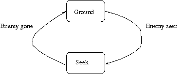

Introduction
The AI library contains code to simplify adding AI to objects. The AI
definition is a hybrid state machine (essentially, state is kept in
the AI class, all other things that might be wanted/needed need to be
kept in the object class). The code in the AI package expects that the
AI instance for each handled object is available via the AI:AI accessor.
Defining AI
The first state defined will be the state
of a newly-created AI class instance. An AI machine is defined as follows:
(def-ai
(
)
...)
To assist in writing readable state machines, there is a TRANSIT
helper macro available. To define what state the AI machine will be in
on next activation, just call (transit ).
Let's look at an example, the ray AI class from Gatlopp:
(def-ai ray-ai
(ground
(let* ((o (object))
(r (range o)))
(loop for p in *players*
if (line-of-sight-p o p r)
do (progn
(setf (target o) p)
(transit seek)))))
(seek
(let* ((o (object))
(target (target o))
(r (range o))
(losp (line-of-sight-p o target r)))
(when losp
(let ((dir (find-direction o target)))
(setf (movement o) (object-speed o dir))))
(unless losp
(transit ground)))))
This defines two states, "ground" and "seek". In the "ground" state,
all we do is check if we have a line of sight between the ray and any
player. Once we have established taht we do, we define that player
object as the current target and prepare to transit to the "seek"
state. If we don't find any player within line of sight, we remain in
the ground state.
In the "seek" state, we check for line of sight to our target. If we
have LOS, we then find the direction of the target and start moving
towards it. If we don't have LOS, we stop tracking the target and
return to the "ground" state.

Full AI package exported symbol list
- ai
-
- This is the class that handles the AI behaviour, it should not
be touched by external code.
- Accessor used for finding the AI object that is specific to a
game object.
- act
- (act object)
Generic function that calls internal code to handle AI state
actions. If you want to add AI capability for a class, define a method
for ACT, calling ACT with the AI object for the game object.
- make-ai
- (make-ai ai-class game-object)
Function to
create an object of a specific AI class, attaching it to a specific
game object.
- def-ai
- (def-ai ai-class (state1 implicit progn...)
...)
Macro for creating AI classes, will expand to code defining the class
and a whole slew of generic functions. Should, in general, not be
introspected or interfered with.
- transit
- (transit new-state)
Helper macro for code inside a DEF-AI state definition. Will cause the
AI object to dispatch to new-state at next activation. Will
not stop running of the current state.